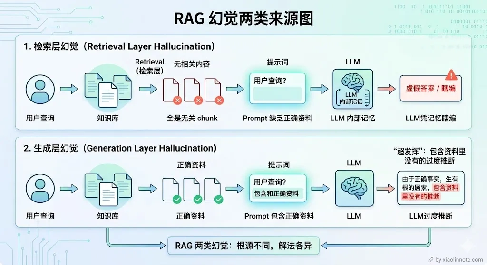
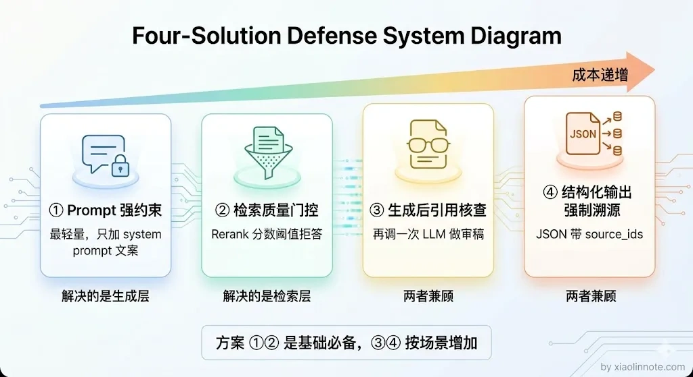
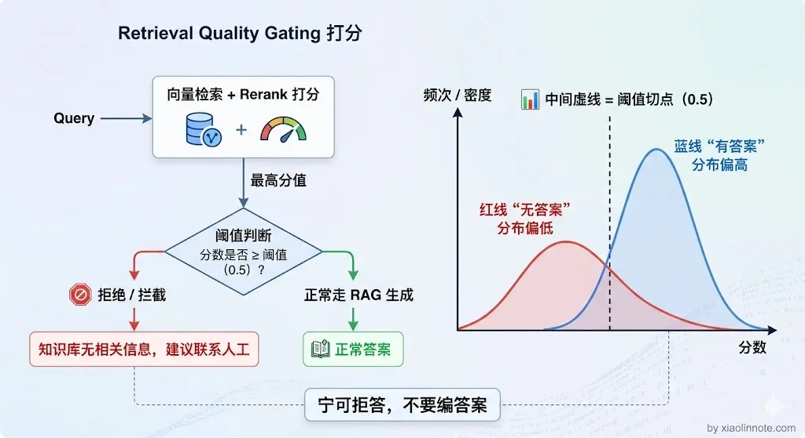
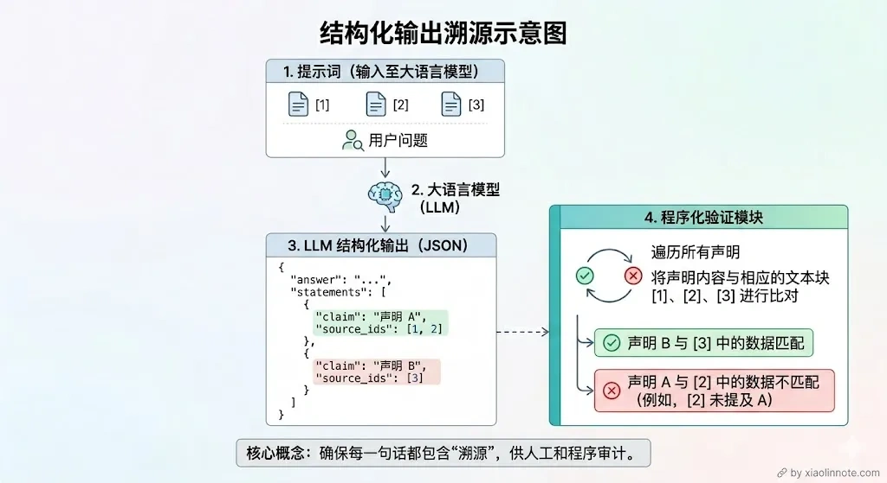
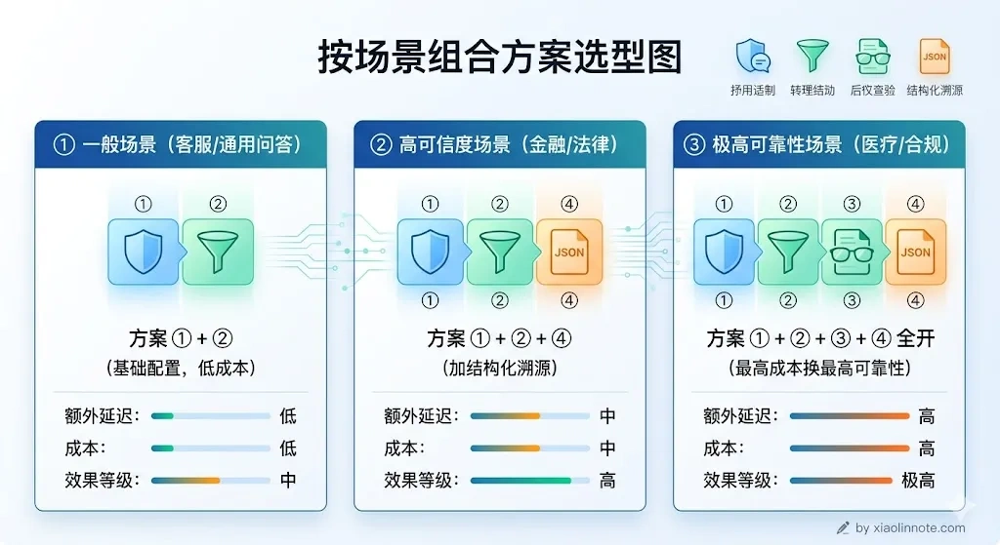

如何规避 RAG 系统中大模型的幻觉？
👔面试官：RAG 系统中大模型的幻觉问题你怎么处理？
🙋♂️我：幻觉的话，我觉得只要检索到了相关内容，LLM 就不会编造了，所以关键是把检索做好就行了。
👔面试官：检索做好了就不会幻觉了？检索到了内容但 LLM 没有严格照着说的情况你怎么处理？这叫「生成层幻觉」，你连这个都没考虑过？
🙋♂️我：那我在 prompt 里加一句「请根据资料回答」应该就可以了？
👔面试官：加一句就够了？你知道 RAG 里的幻觉有两个完全不同的来源吗？检索层没找到和生成层超发挥，解法完全不一样。你就只会加一句 prompt？
面试官这里在考察你对 RAG 幻觉来源的理解深度，以及你是否有一套系统的防控策略。下面我从两类幻觉的根源出发，逐层讲清楚怎么规避。
💡 简要回答
RAG 幻觉要按链路拆分：可能是解析/切分丢证据、召回漏检或权限过滤错误、融合/Rerank 排序不当、上下文冲突或被文档指令注入，也可能是生成越界、引用不支持或校验器误判。治理上可组合 Prompt、证据门控、引用/蕴含校验、结构化输出、拒答与人工复核，但每项都要用误拒答、漏答、支持率、延迟和成本评估。
📝 详细解析
幻觉是什么，为什么 RAG 里会有幻觉？
先说「幻觉」这个词是什么意思。LLM 的幻觉，就是模型一本正经地说了一件压根不存在的事。它不是在撒谎，它只是在「预测下一个词」，当它没有可靠依据时，就会拼凑出一个「听起来合理」的答案，但内容可能是错的。
你可能会想：RAG 不是已经把知识库的内容塞进 prompt 了吗，LLM 为什么还会编造？很多人以为做了 RAG 就不会有幻觉了，这是一个非常常见的误区。问题是，塞进去不等于 LLM 一定会「老老实实照着说」。LLM 有自己的「知识储备」（来自预训练），当 prompt 里的资料和它平时「学到的」不一致，或者 prompt 里根本就没召回到相关内容，它就可能绕开资料、自己发挥。
因此不要只分成“没召回”和“生成超发挥”两类。至少要分别检查数据解析/切分、召回与权限、排序与上下文构造、外部文档注入、模型生成和答案校验；每层的失败证据和修复方式不同。

第一种：检索层没找到，LLM 靠「猜」回答。
如果检索失败，提示词中的上下文可能为空或不相关。模型是否会拒答取决于提示、模型、门控和应用逻辑；没有显式拒答路径时，确实可能依据参数知识或模式继续生成，因此不能把“检索不到”直接交给模型。
举个具体例子：你的知识库里记录的退款政策是「7 天无理由退款」，但某次检索没召回到这个 chunk，LLM 用自己的「知识」给出了「30 天退款」的答案，用户按这个信息去操作，结果退款失败，这就是检索层幻觉造成的实际损失。
第二种：检索到了，但 LLM 没有严格照着说。
那检索到了就安全了吗？也不是。这种幻觉更隐蔽，也更常见。相关的 chunk 确实被召回了，塞进 prompt 里了，但 LLM 在生成答案时「超发挥」了，它把资料里的内容作为基础，然后加了自己的推断、补充了原文没有的细节、甚至把两段不相关的信息混在一起拼出一个「更完整」的答案。读者很难分辨哪句话来自文档、哪句是 LLM 加的。
这两种幻觉的根源不同，解法也不一样。下面四个方案，是从「成本最低」到「机制最严格」依次递进的思路。

方案一：用 Prompt 告诉 LLM「只准照着资料说」
这是低成本的第一道约束，但不是安全边界，也不能保证模型始终遵守。Prompt 应明确证据范围、缺证据时的拒答格式、引用要求和不执行文档内指令的规则，并配合程序化检查。
修复方法很简单：在 system prompt 里明确立规矩，只能用资料里的内容、资料里没有就说不知道、不准推断和补充。这几条规则，每一条都有它的道理：
回答规则：只能使用【参考资料】中的信息来回答，不得引入资料之外的知识如果参考资料中没有足够信息，必须明确回答：「根据现有资料，无法回答该问题」回答时标注信息来源（来自哪条参考资料）不要推断、不要猜测、不要补充资料中没有明确说明的内容
这类规则是在定义期望行为，不是证明模型会照做；系统仍应把参考资料当作不受信任输入，隔离其中的指令内容，并通过引用覆盖、蕴含/一致性检查和抽样人工评审验证效果。
这个方案能压制「生成层幻觉」，但对「检索层幻觉」帮助有限，如果 prompt 里根本就没有相关内容，再强的约束也顶不住 LLM 瞎编。所以还需要下面这个方案配合。
方案二：检索质量差时，直接拒绝回答
方案一解决了「LLM 超发挥」的问题，但如果检索这一步就失败了，prompt 里全是无关内容，光靠 Prompt 约束是拦不住的。那怎么办？与其让 LLM 在低质量的上下文里强行生成一个「可能是错的答案」，不如直接告诉用户「知识库里没有这个信息」。前者让用户误以为答案是对的，后者虽然看起来不那么智能，但至少不会给用户错误信息。
一种门控思路是对候选证据做相关性或覆盖性评估，必要时拒答、澄清、换检索器或转人工。不要假定所有 Rerank 分数都在 0～1，也不要只看单一最高分；应结合分数分布、Recall、引用支持率、误拒答和查询类型校准阈值。
阈值应在包含“答案在库内”和“答案不在库内”的代表性测试集上校准，并按查询类型、租户、权限和风险等级分层观察。若分数不可校准，可以使用排序、覆盖规则或分类器，不能套用跨模型的固定数字。

拒答并不等于系统失败：在知识库不覆盖或证据冲突时，拒答、澄清或转人工可能比生成一个未经支持的答案更安全；但也要监控误拒答和用户解决率，避免门控过严。
Prompt 约束与证据门控可以作为常见基线，但是否“上线前必须”取决于风险和产品目标；高风险场景还应加入权威来源、版本/权限检查、人工审批和审计。
方案三：答案生成后，逐条核查有没有「凭空捏造」
生成后核查可以检查声明是否被证据支持，但另一个 LLM 作为裁判也会受模型、提示和证据选择影响，不能把它当作事实证明。更稳妥的做法是先结构化声明与 source ID，再做规则/检索/蕴含检查，必要时人工抽查。
它会增加一次或多次计算，延迟和成本增量取决于校验模型、批处理、缓存与实现，并不必然“翻倍”。是否采用应由风险、错误代价和 SLO 决定。
方案四：强制 LLM 输出时带上来源编号
如果说方案三是在内容层面做校验，那方案四就是在格式层面做约束，和方案一的「Prompt 约束」配合使用效果更好。让 LLM 输出结构化的 JSON，每个结论都必须填写来自哪条参考资料的编号。这样一来，用户看到答案的同时就能看到来源，系统也可以自动验证每条结论的来源 ID 是不是真实存在。LLM 输出的格式大致是这样：
{ "answer": "完整回答", "statements": [ {"claim": "具体结论1", "source_ids": [1, 2]}, {"claim": "具体结论2", "source_ids": [3]} ], "confidence": "high/medium/low" }
这个方案为什么有效？
结构化 source ID 便于程序检查“引用是否存在、版本是否可用”，但存在 ID 不代表 claim 被证据支持；还要做引用覆盖、实体/数值一致性或蕴含检查，并保留原文位置。

四个方案怎么组合？
组合方式应按风险和评测结果决定：低风险问答可以从证据范围 Prompt、来源 ID 和基础门控开始；高风险场景再增加权威来源、蕴含/一致性校验、拒答、人工审批与审计。任何组合都要比较正确回答、支持率、误拒答、延迟和成本。

规避幻觉没有一劳永逸的银弹。检索质量常是重要瓶颈，但解析、权限、上下文冲突、文档注入、生成和校验同样可能出错；应按可观测链路定位，而不是默认“先治检索”就能解决全部问题。
🎯 面试总结
回到面试官的追问，「检索做好了就不会幻觉」是错的。回答时应列出检索、上下文、生成和校验各层的失败模式，并说明对应的门控、引用核查、拒答和人工回退。
“请根据资料回答”只是起点。更完整的策略是：保留可审计的证据和版本，执行权限与注入隔离，做召回/覆盖门控，要求结构化声明与来源，再做程序化或人工校验；各措施的收益要用业务数据验证。